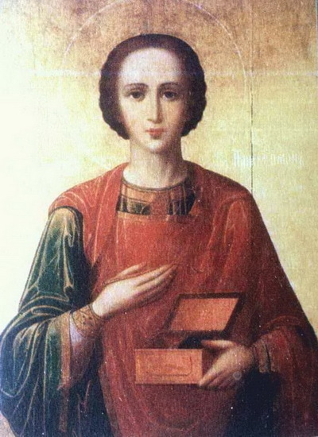

9 08 2012 (1738 дней 1 час назад)
Святой Великомученик Пантелеймон

9 августа в Абхазии отмечают День святого Пантелеймона (целителя).
В Сухумском соборе в честь Дня Святого Пантелеймона состоялось богослужение, которое вел иерей Виссарион (Аплиа).
Сухумский Кафедральный собор Благовещения Пресвятой Богородицы был построен в 1915 году на средства греческой общины г. Сухума и до 40-х годов ХХ века являлся Греческим храмом. Кафедральным собор стал после Великой Отечественной войны 1941-1945 г.г.. По архитектуре собор относится к крестово-купольным трехнефным храмам, с византийским куполом.
В соборе Святого Пантелеймона Новоафонского монастыря с утра состоялось торжественное богослужение, водосвятный молебен и крёстный ход. Вел богослужение настоятель Новоафонского монастыря иеромонах Андрей (Ампар). В богослужении участвовали также священнослужители и паломники из России.
В соборе с мая 2009 года находится Храмовая икона «Святой Целитель Пантелеймон. В житии». Свято-Пантелеймоновский монастырь (бывшая домашняя церковь Романовых) – один из самых больших действующих православных храмов Абхазии.
Соборный Храм Новоафонского монастыря воздвигнут в 1888 - 1900 годах по проекту архитектора Никонова в честь святого великомученика Пантелеймона-целителя. Первый камень в основание Храма собственноручно заложили российский император Александр III и императрица Мария Федоровна.
В мае 2009 года Благотворительный фонд Игоря Саввиди при содействии иерея Виссариона (Аплиа) организовал возвращение этой уникальной реликвии в Новоафонский монастырский комплекс. Храмовая икона была написана ко Дню коронации Николая II на Святой горе Афон в Русском Свято-Пантелеимоновском монастыре и передана в дар обители монастыря святого апостола Симона Кананита (Новый Афон, Абхазия) в 1896 году. В советское время икона была утеряна.